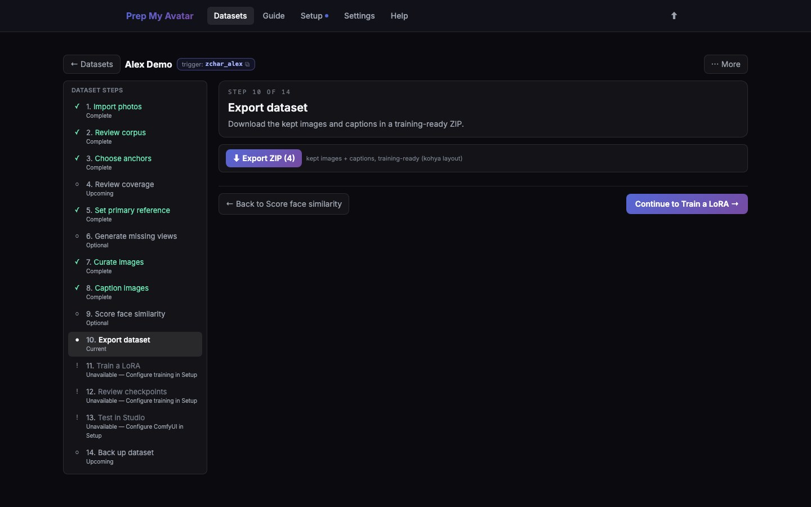

First run · 17 of 21
Step 17: Export dataset
Export creates a standard training package from the images currently marked kept. It does not include rejected or undecided images.

Before you begin
Finish curation and captions first. An export can be useful even if you never train inside Prep My Avatar.
Do this
- Open Export dataset in the dataset step navigator. Its URL ends in
/export. - Check the kept count beside Export ZIP.
- Select Export ZIP.
- Choose a destination folder if your browser asks.
- Wait for the download to finish, then open the ZIP to verify it contains image files and matching
.txtcaption files. - Keep
_prep_my_avatar_manifest.json. Training tools can ignore it, but it records the source mix, coverage, and provenance. - Select Continue to Train a LoRA.
An export ZIP is a training package, not a complete backup of the project. The final guide step explains the separate Backup action.
You are finished when
A ZIP file exists in your chosen download folder and its image/text pairs match the kept set. If export is your goal, skip the optional training, checkpoint-review, and Studio work in Steps 18–20, then continue to Step 21 to back up the dataset.